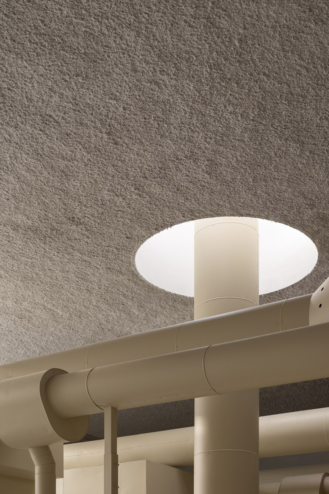
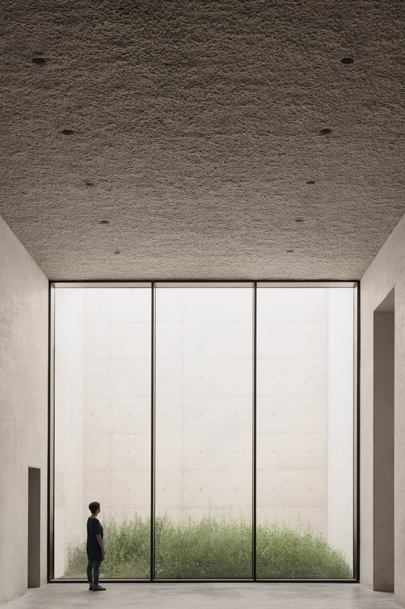
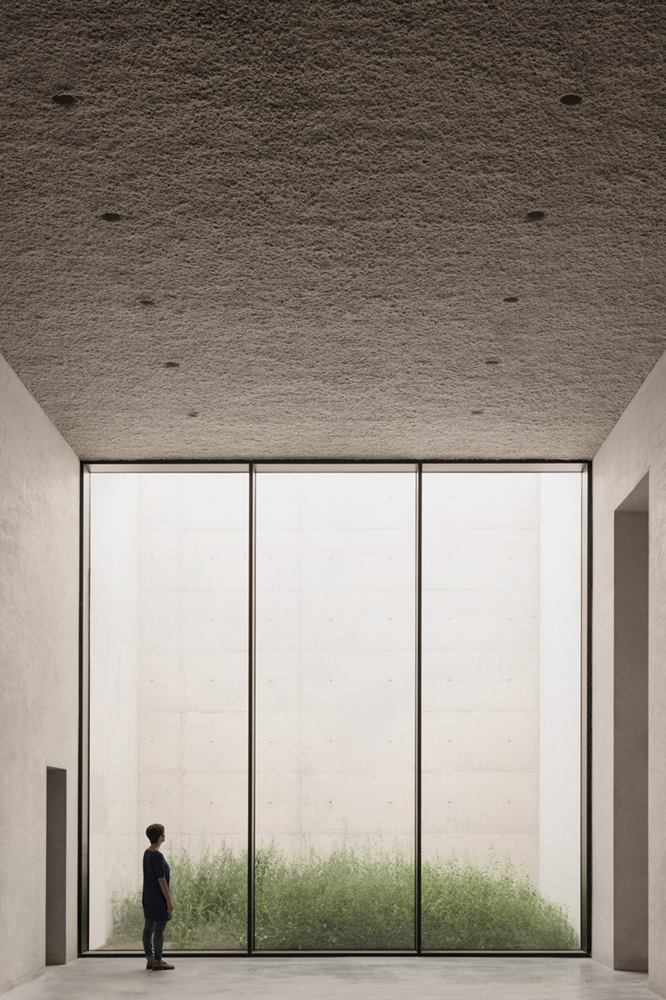
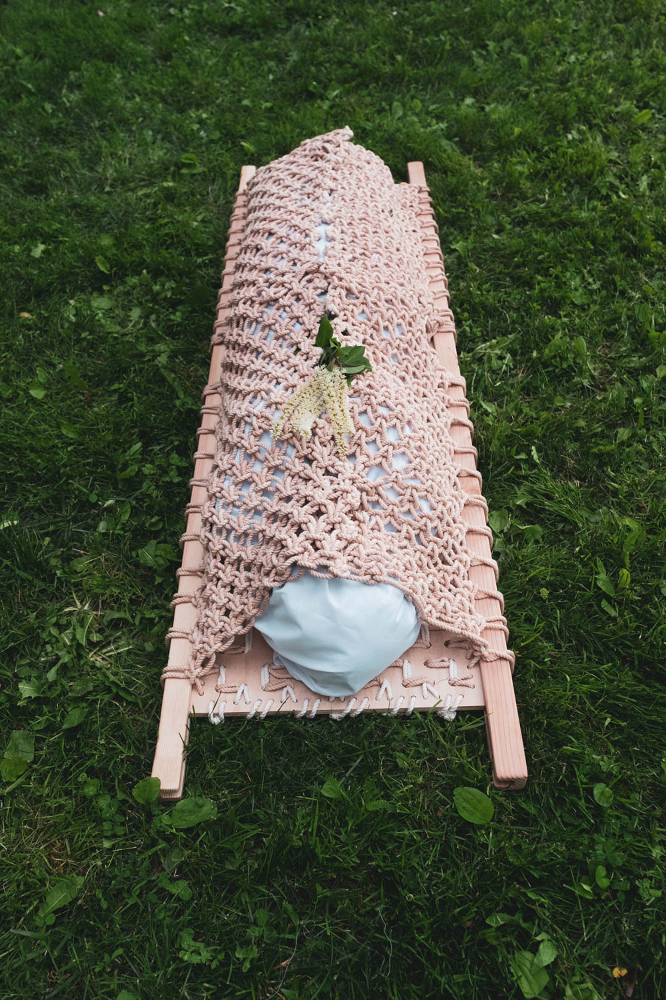
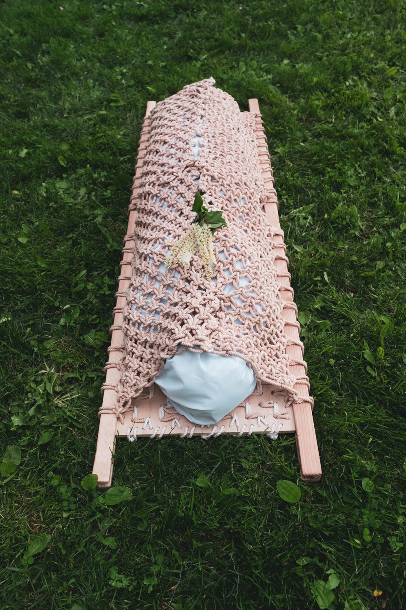
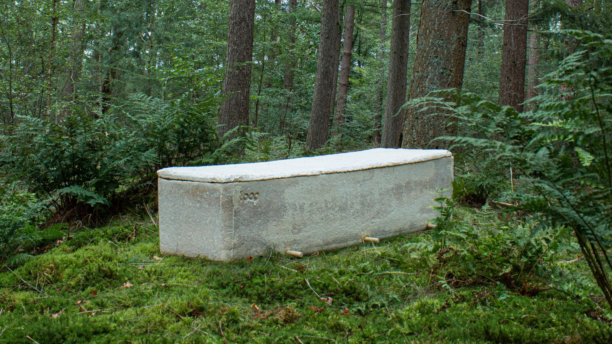
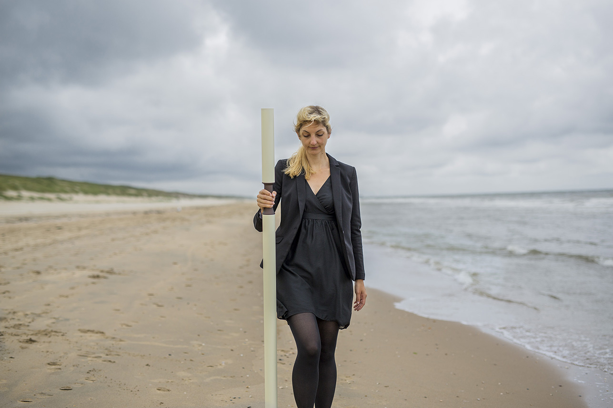
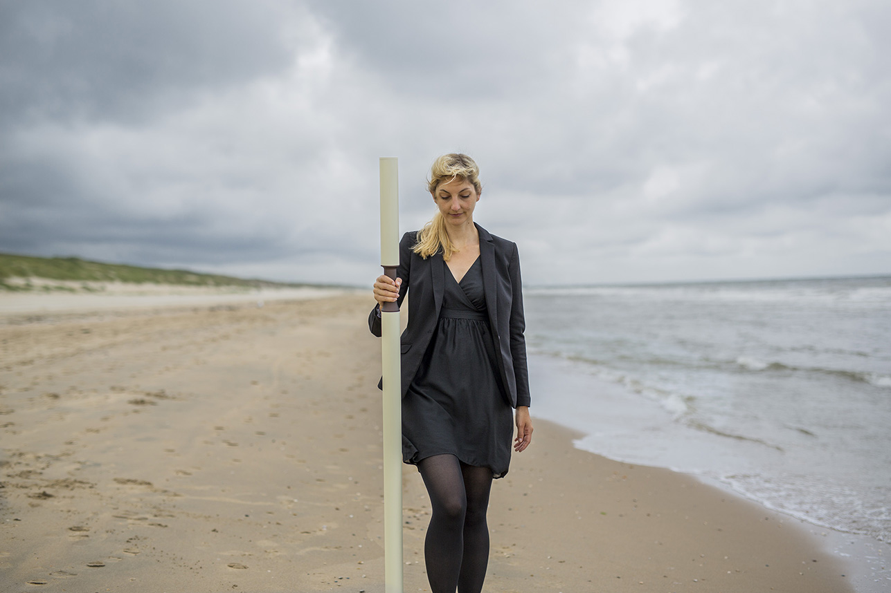

PART 2 — VISUAL SHIFT
2.0 From Disconnect to Symbiosis
There is a need to make a shift from this disconnected viewpoint of death to a life where we and death come together in a symbiotic language, whether visually or linguistically. Design can assist to change this narrative and aid towards the pivot to positivity. In order to fully understand how to do this, we need to firstly understand our disconnect, and what precisely within the visual/linguistic language surrounding our mortality needs to change..1 What is
the current disconnect?
Currently, there is a clear disconnect with the nature of death, and how we visualize it in western society. Something that is so true and natural has been depicted as a mysterious evil. As previously discussed, we tend to have a
darker narrative surrounding our mortality, particularly in the way we visualize it. We need to remember what there is at the core of death? Essentially, it's just a natural phenomenon (Rank, 1998). We are part of our world's ecosystem. We are born, and then we die, and it’s as simple as that. In order to bring us closer to the realisation that death is not scary, just natural, a change must occur.
2.2 Symbiosis:
Embracing death
positivity
There needs to be a systematic shift from disconnect to symbiosis that will turn fear into harmony. Embracing the nature of death, we can start seeing it in a more positive light. In order to do that we need a step by step breakdown of the built visual structure, to thereafter rebuild it with positive imagery. Breaking it down in smaller re-visualisations, we can slowly palliate the digestion, or rather acceptance of death (Lamb, 2020).2.3 Re-visualisers of Death:
Examples
The re-visualisation of death is not a new thought. Recent innovations have sought out ways to re-visualize death as a concept, clearly understanding the need for a mental shift. Their approaches could be the foundation on which we base our new way of thinking. In this section I wish to address a couple of them as a visual example for the future.
2.3.1 Design
Studio Common Accounts —
Three Ordinary Funerals
Design studio Common Accounts created the interactive installation ‘Three Ordinary Funerals’, as an imagination of what the future of funeral homes could behold . The founders Igor Bragado and Miles Gertler acknowledge the fact that there needs to be a redesign of the concept of death. One that also encompasses ways to counteract the current environmental issues as well as embracing the rise of the digitalisation. The bodies that come find their final resting place at the funeral home ‘Closer Each Day’ will be liquified and used as fertilization of the flora surrounding it. While social media will generate an afterlife that will continue on virtually. (Bragado &Getler, 2017-2020)

2.3.2 Kaan Architecten — Crematorium Siesegem
The crematorium in Siesegem is designed by the Belgium Architecture Firm ‘Kaan Architecten’, and is created to renounce presumptuous monumentalism. The building is set in a serene natural environment, and reflects the nature within the building by internalising the landscape. The building is divided in different rooms that have a calming and reflective effect on its visitors. It is light and open, and rejects all the previous ideas of darkness and sadness that have generally been the theme of these types of spaces. It shows that merging with nature can create a tranquility contradictory to anxiety and sadness. (Kaan Architecten, 2013 - 2019)
 



2.3.3 Shaina Garfield and Bob Hendrikx —
The EcoFriendly Coffin
The young industrial designer Shaina Garfield has lyme disease, and therefore reflects a lot upon what her life entails, and how near death constantly is. For a recent project, she decided that it was important to create something that brings us back to our connection to nature, instead of trying to constantly escape it. Realising the harmfulness of our present day funeral rituals, she sought out to redesign it, and created Leaves. The eco-friendly coffin seeks “to rekindle a connection to nature and even care for it when life comes to an end.” The design is a woven biodegradable wrap, that can ritualistically become a place for interweaving flowers, messages or any other memorabilia of the dear ones left behind. Not only making it eco-friendly, but also a graceful ceremony. (Garfield, 2020) 


 Someone else who attempted to re-design the materiality of the coffin is Bob Hendrikx. Bob is a researcher at the Technical University in Delft that sought out to re-connect humanity with nature through design. This resulted in a sustainable, biodegradable mycelium which is made out of mushrooms. When the bodies are laid to rest in ‘the living coffin’, the mycelium will do its work, ensuring that the body decomposes in one third of the time that it would in a regular customary coffin. Bob explained his reasoning as follows: “The Living Cocoon enables people to become one with nature again, and to enrich the soil instead of polluting it.” Showing us how our death can be a valuable part of the circle of the earth’s ecosystem.
(SOURCE BOB HENDRIKS)
Someone else who attempted to re-design the materiality of the coffin is Bob Hendrikx. Bob is a researcher at the Technical University in Delft that sought out to re-connect humanity with nature through design. This resulted in a sustainable, biodegradable mycelium which is made out of mushrooms. When the bodies are laid to rest in ‘the living coffin’, the mycelium will do its work, ensuring that the body decomposes in one third of the time that it would in a regular customary coffin. Bob explained his reasoning as follows: “The Living Cocoon enables people to become one with nature again, and to enrich the soil instead of polluting it.” Showing us how our death can be a valuable part of the circle of the earth’s ecosystem.
(SOURCE BOB HENDRIKS)
2.3.4 Miro Rivera Architects —
Yarauvi
Yarauvi is an ongoing project of Miro Rivera Architects firm, which is designed to be a floating city of the dead. During his studies at Yale, Miro suffered the loss of one of his teachers due to the current COVID crisis. This made him want to process the death through Yarauvi. “As the world grapples with the staggering death toll of Covid-19, Yarauvi is a timely reminder that death is a part of humanity that architecture should embrace rather than avoid,” said Miró. “At the same time, the message of tolerance and reconciliation that Yarauvi represents is critical as the world seeks to take action in the face of widespread, systemic injustice and inequality.” The place is an intersectional feminist and religiously inclusive approach to bringing people together in grief and celebration. It shows us that we can oppose the current structures of racism, patriarchy and religious controversy while embracing the elegance of death. (Miro, 2020).

2.3.5 Jingle Yu —
Die Fabulously
Jingle Yu is a young fashion designer that created the collection ‘Die Fabulously’. Die Fabulously aims to reconstruct the notion of having to quite literally die in-fabulously. The clothes intend to reflect the personalities of the deceased and their fashion wishes, that in turn reflect the lives they have lived. Even though the collection finds its roots in the LGBTQ community, the concept of it could be applicable to funeral wear in general. Life should be reflected upon death and celebrated with colors not with darkness. It addresses the fact that we tend to go black, when we should celebrate with color. Furthermore, the non-representative clothing of the deceased will silence the dead instead of giving them a final voice. Die Fabulously creates a queer inspired look that aims to reclaim the voices of the dead and their wishes in their final moments above ground (Yu, 2019). 

2.3.6 Olson Kundig Architects —
RECOMPOSE | SEATTLE
Recompose is an announced project of the architect firm Olson Kundig Architects, by Alan Maskin. The aim is to construct this compostable city in Seattle, where the remains of people receive the “natural organic reduction” treatment. This means that bodies will be composted and consequently converted into soil, that will in turn nourish its natural environment. This naturises the process of after-death care, and will therefore be the world’s first sustainable option to this happening (Maskin, 2020).2.3.7 Anna Citelli & Raoul Bretzel
— CAPSULA MUNDI
Anna Citelli and Raoul Bretzel are the creators of Capsula Mundi: an egg-shaped capsule that is designed to become the final resting place of the human body. With capsula mundi we return to our fetal position, and are put in a biodegradable pot with a tree attached to the top of it. The tree can be chosen yourself, or by the next of kin, and can be planted in nature. One essentially becomes the nourishment of the tree and its surrounding environment. It aims to re-connect the severed ties of humanity with nature by bringing the deceased back to it, and the ones that left behind closer to it. (Citelli & Bretzel, 2019)
2.3.8 Cycle of Rituals —
TOLAD
Last but not least is the Totem of Death and Life, also known as the Tolad. Tolad redesigns the concept of scattering the ashes of a loved one. Instead of having one singular scattering occasion and location, the Tolad enables one to do so whenever and wherever they want. The Tolad is designed to have an urn like capacity, yet is shaped like a walking stick. While walking you can slightly squeeze it, and it will release a modest amount of the remains. Together with the Tolad App you can thereafter also retrace the scattering route, and always re-walk the path with its exact dropping locations. When completely emptied, the stick can be recycled or becomes a memento of the deceased. This environmentally friendly solution not only is eco-conscious but also will bring its users closer to nature and improves their health, as it enforces walking. Furthermore, it embraces a warmer and more humane version of saying goodbye to a loved one, embracing their death step by step (Cycle
of Rituals, 2017). 
